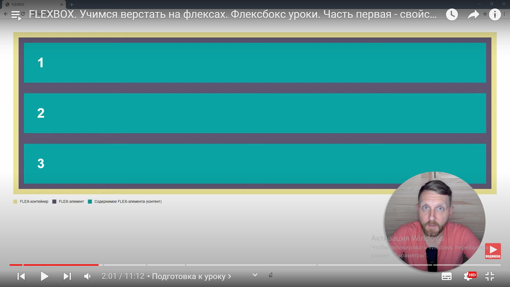
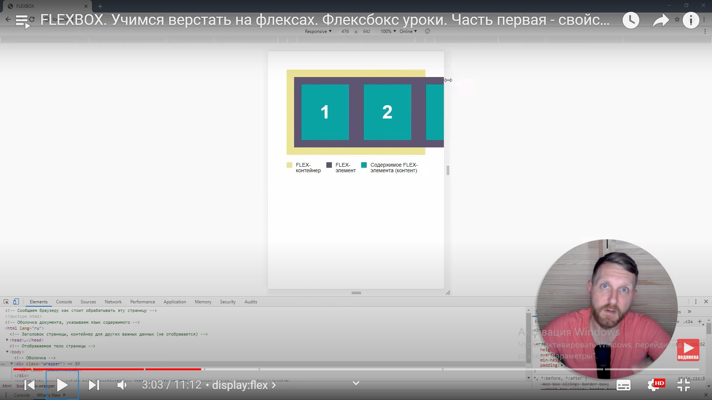
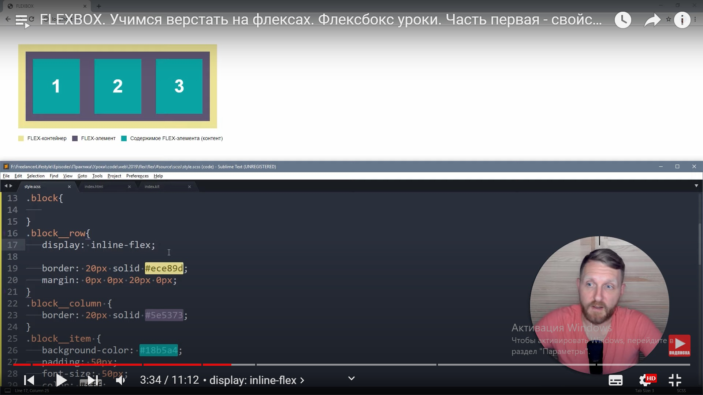
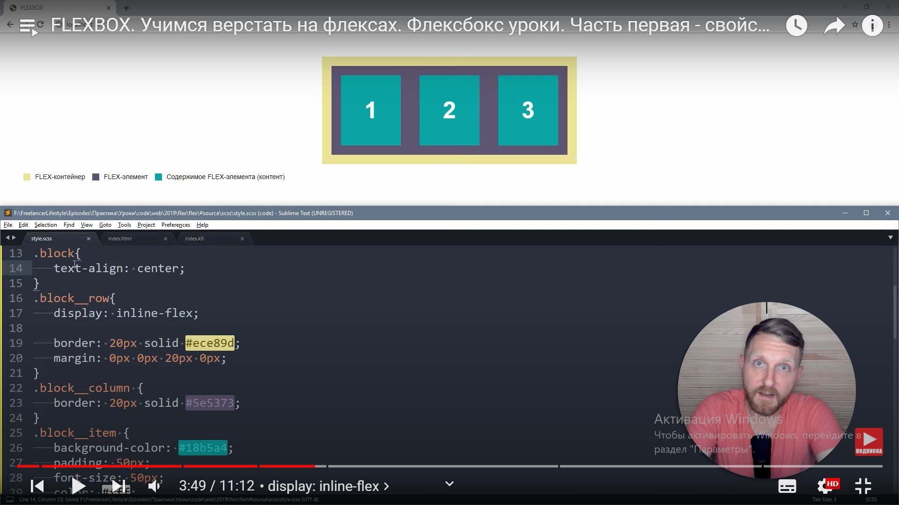
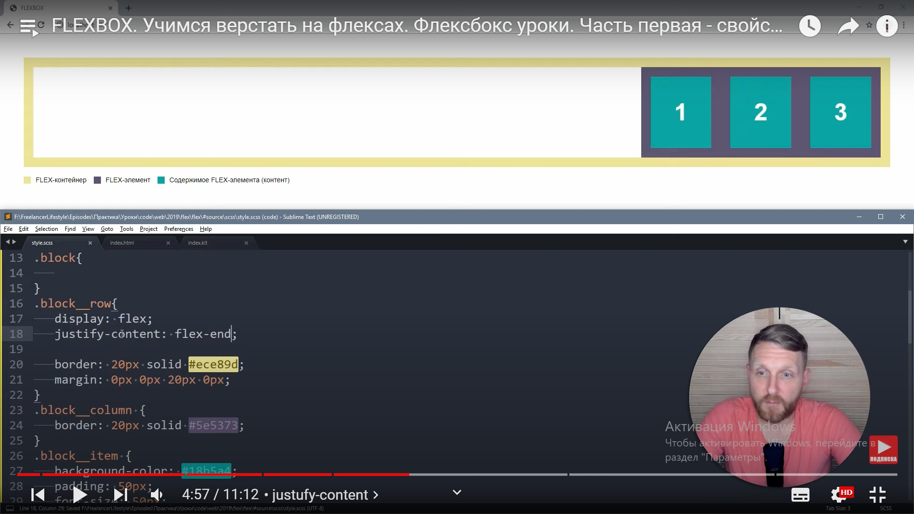
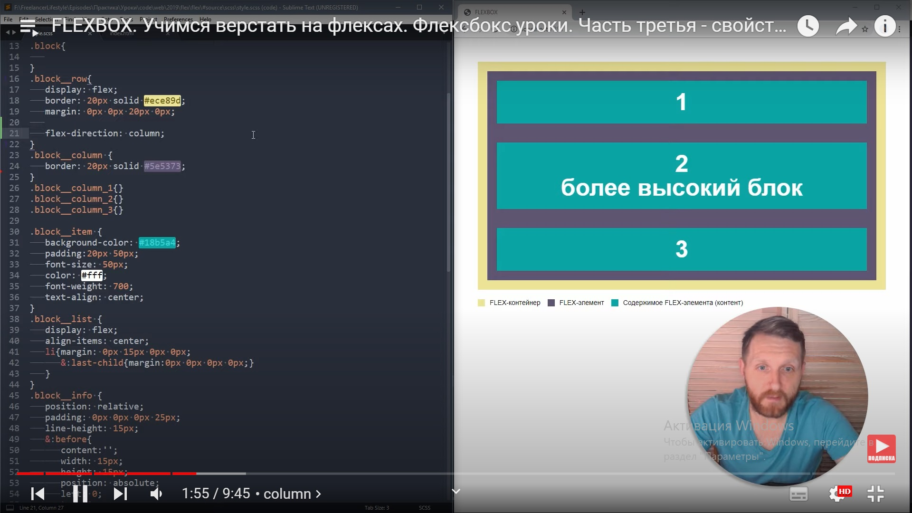
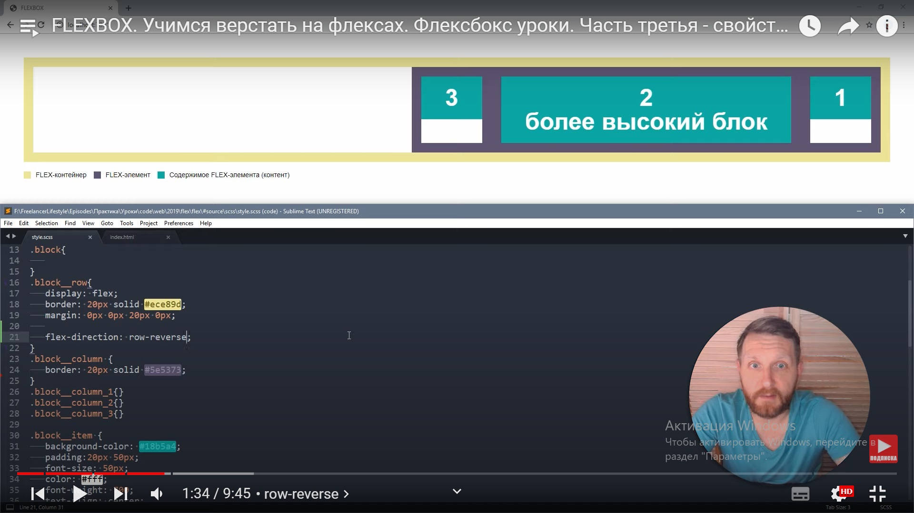
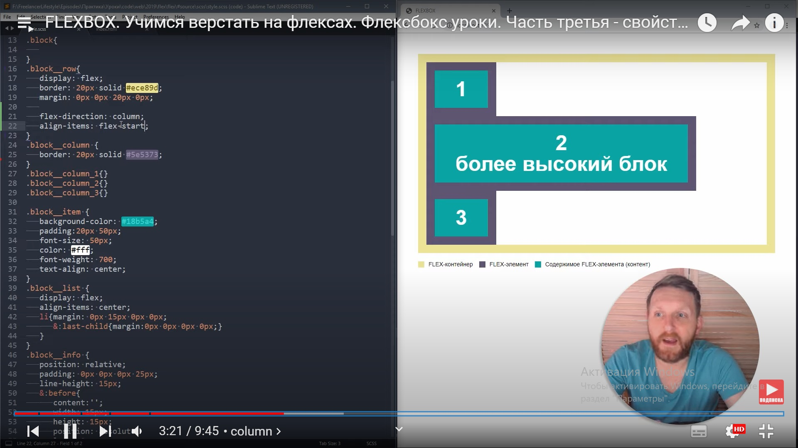
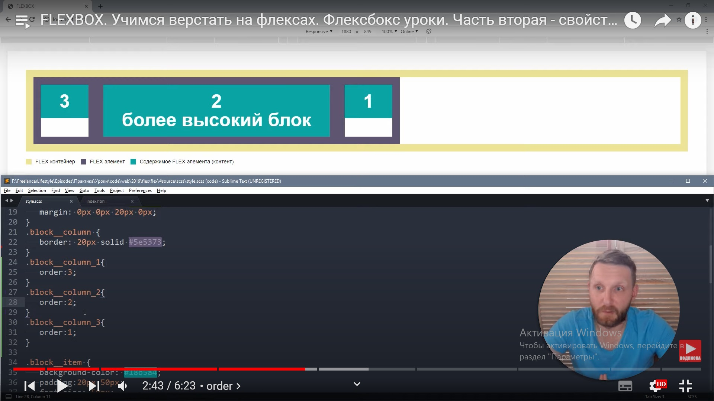

для реализации выполнения работы модулей по технологии флекс, нужно создать определенную конструкцию блоков в html-файле, через которую можно будет управлять из CSS поведением страницы — должно быть миимум 4 уровня вложенных дивов:
Вот примерная конструкция флексбокса на 4 элемента в html. При этом двойное название класса "flex-element flex-element-1" сделано для того чтобы можно было обратиться как к общей группе элементов "flex-element", так и к конкретному элементу "flex-element-1".
<div class="mother">
<div class="flex-row">
<div class="flex-element flex-element-1">
<div class="flex-content">1</div>
</div>
<div class="flex-element flex-element-2">
<div class="flex-content">2</div>
</div>
<div class="flex-element flex-element-3">
<div class="flex-content">3</div>
</div>
<div class="flex-element flex-element-4">
<div class="flex-content">4</div>
</div>
</div>
</div>
Для управления поведением страницы в CSS-файле предучсмотрены следующие команды:
. flex-row <display: flex; flex-flow: row wrap; … >
0. Без применения флекс блоки ведут себя классически — строятся по вертикали друг под другом и растягиваются по горизонтали на всю доступную ширину:
1. На уровне «row» применяем display:flex При этом блоки перестают строиться вертикльно один над другим и строятся в горизонтальный ряд друг за другом
При этом флекс-элементы если не помещаются в поле родительского row объекта, то будут справа выползать за его край
2. На уровне row применив display:inline-flex получим следующее: размер контейнера родительского row объекта изменится так чтобы без зазоров обнять дочерние элементы -
Если при этом yна уровне выше, т.е. родителю всего флексконтейнера (диву с классом "mother" в примере выше), прописать свойство text-align: center;, то весь контенер выровняется посередине
3. Распределение элементов внутри контейнера по горизонтали (основной оси) row команда justify-content:
justify-content: flex-start; - элементы слева
justify-content: flex-end; - элементы справа
justify-content: center; - элементы по центру
justify-content: space-around; - элементы распределены равномерно по ширине как офицеры в погонах
justify-content: space-between; - элементы распределены равномерно по ширине с равными промежутками между ними
Это свойство настраивает не отступы типа марджина, а именно пространство между элементами (если динамичсеки менять ширину окна – то и пространство будет сужаться или расширяться)
4 Распределение элементов внутри контейнера по вертикали (второй оси) row команда align-items:
align-items: stretch; - флексэлементы растягиваются по высоте на высоту контейнера (свойство по умолчанию)
align-items: center; ; - элементы по центру
align-items: flex-start; - элементы вверху
align-items: flex-end; - элементы внизу
align-items: baseline; - элементы выстраиваются по базовой линии (по "весу" элемента, как по осадке корабля)
5. Включение адаптивности блоков (чтобы они перестали выползать вправо за границы контейнера-родителя а опускались вниз на следующий уровень при достижении границы размера контейнера-родителя)
flex-wrap: wrap; - элементы адаптируются (не вылазят за границу блока радителя)
flex-wrap: nowrap; ; - элементы не адаптируются (по умолчанию)
flex-wrap: wrap-reverse; - элементы адаптируются в обратном порядке – было 1 2 3, станет при перестроении 3 2 1
6. Изменить основную ось нанизывания блоков можно в команде flex-direction
flex-direction: column; - построить в колонку
flex-direction: column-reverse; - построить в колонку зеркально (в обратном порядке)
flex-direction: row; - построить в ряд
flex-direction: row-reverse; - построить в ряд зеркально (в обратном порядке)
Если поменять свойство с row на column то поменяются местами х и у, воображаемая главная и вспомогательная ось распространения элементов во флексмассиве. Это приводит к тому что align-items: начнет отвечать за размер по горизонтали, а justify-content: будет отвечать за размер по вертикали.
  7. Можно описывать в команде flex-flow две команды сразу – flex-direction и flex-wrap:
.flex-container {
display: flex;
flex-flow: row wrap;
}
8. Распределение положения конкретного элемента, имеющего собственный уникальный идентификатор - например класс-модификатор или id, внутри контейнера по вертикали (второй оси) row команда align-self
Все определения такие-же как и у команды align-items: stretch, center, flex-start, flex-end, baseline
align-self: center; - элементы адаптируются (не вылазят за границу блока радителя)
align-self: flex-start; ; - элементы не адаптируются (по умолчанию)
falign-self: flex-end; - элементы адаптируются в обратном порядке – было 1 2 3, станет при перестроении 3 2 1
9. Порядок следования блоков внутри контейнера можно на ходу изменить, присвоив каждому элементу в классе-модификаторе команду order
order: 2; - где 2 это номер следования блока в последовательности элементов.
Это нужно прописать для каждого элемента, относящегося к флексэлементам конкретного флексбокса.
10. Базовая ширина флексэлемента регулируется командой flex-basis:
flex-basis: 100px; - возможные значения auto, размер в % и размер в px. Это не эквивалент width, а базовое значение ширины, которую можно дополнительно менять еще и другими командами:
Кроме того существуют дополнительно такие команды:
flex-grow: 1; - контролирует, сможет ли становиться элемент больше указанного базового размера в flex-basis:. Число, указывает, насколько этот элемент будет увеличиваться по сравнению с остальными гибкими элементами.
flex-shrink: 3; - контролирует, сможет ли становиться элемент меньше указанного базового размера в flex-basis:. Число, указывает, насколько этот элемент будет уменьшаться по сравнению с остальными гибкими элементами.
Значение по умолчанию – 0. Если эта команда прописана в общем классе флексэлементов, то «0» - ничего не делать с размерами, а «1» - растянуть все элементы так, чтобы они занимали в сумме всю ширину флексконтейнера.
Есть общая команда, включающая в себя все три вышеописанные команды:
flex: flex-grow flex-shrink flex-basis|auto|initial|inherit;
прописать в контейнере row
flex-direction: column;
justify-content: space-between;
или альтернативный вариант: для среднего блока в его класс-модификаторе
flex: 1 1 auto;
/* родитель */
.block{
}
/* flex-контейнер */
.block__row{
border: 10px solid #ece89d;display:flex;
}
/* flex-элемент */
.block__element{
border: 5px solid #5e5373;flex: 0 1 33.333%;
}
/* flex-элемент №1 */
.block__element_1{
}
/* flex-элемент №2 */
.block__element_2{
}
/* flex-элемент №3 */
.block__element_3{
}
/* контент */
.block__content{
background-color: #18b5a4;/* плюс прочие стили для текста, отступы */
}
/* flex-контейнер */
.block__row{
border: display:flex; flex-wrap:wrap;
}
/* flex-элемент */
.block__element{
border: flex: 0 1 50%;
}
/* flex-контейнер */
.block__row{
border: display:flex; flex-wrap:wrap;
}
/* flex-элемент */
.block__element{
border: 5px solid #5e5373;
}
/* flex-элемент №1 */
.block__element_1{
flex: 0 1 100%;
}
/* flex-элемент №2 */
.block__element_2{
flex: 0 1 50%;
}
/* flex-элемент №3 */
.block__element_3{
flex: 0 1 50%;
}
/* flex-контейнер */
.block__row{
display: flex;margin: 0px -5px;
}
/* flex-элемент */
.block__element{
padding: 0px 5px;flex: 0 1 25%;
}
/* flex-контейнер */
.block__row{
border: display:flex;
}
/* flex-элемент №1 */
.block__element_1{
flex: 0 0 200px;
}
/* flex-элемент №2 */
.block__element_2{
flex: 1 1 auto;
}
/* flex-контейнер */
.block__row{
display:flex; flex-direction:column; height: 300px;
}
/* flex-элемент */
.block__element{
}
/* flex-элемент №1 */
.block__element_1{
}
/* flex-элемент №2 */
.block__element_2{
flex: 1 1 auto;
}
/* flex-элемент №3 */
.block__element_3{
}
.block__row{
display:flex;
flex-direction:column;
height: 300px;
align-items: center;
}
.block__row{
display:flex;
flex-direction:column;
height: 300px;
justify-content: space-between;
}
.block__row{
display:flex;
justify-content:center;
align-items:center;
height: 300px;
}